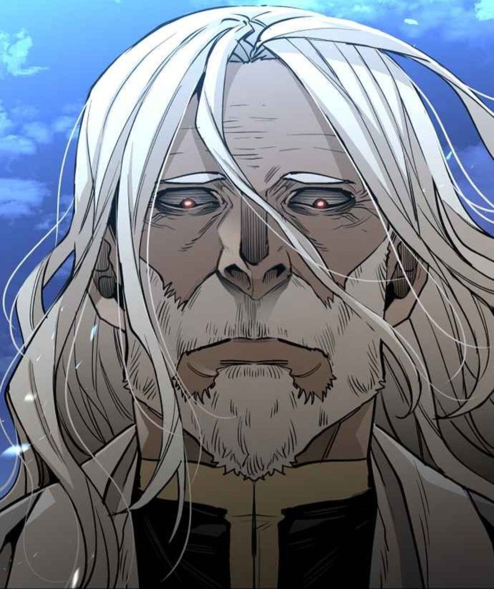

| Gimbzo Kōkan Moto | the Kōkan King Kōkan, the red line of the Moto as of the morning of Shimane, the last field of the forty-year war, the hour before he went into the mud |
| Epithet | The Kōkan King. For his last twenty years the north said the Butcher of Hiroe and the Cellar King, and the criers only ever said the king. Naiser Yukari called him the war itself, wearing a man’s face |
| Concept | He hits everything as hard as he can, and the breaking never stops where he hit. |
| Stat line | Stage X Realization · Master (Fire) Level 296 · Fractured · Kura no Ō (鞍の王), the Saddle King Body X Mastered, IV · Fate IX Walked 35%, III · Lenses: home + 2 · yield (η) 0.70 |
| Combat grammar | Percussion |
| Aura and sound | black, like his coat, with ember-red running through it the way fire runs under a burned field; at full push the black splits and the red comes up through every crack sound: a forest fire, the roar and the crack of green wood going |
| How he moves | In a straight line, at the center, from the saddle or on foot, and never backward. |
| Stack | sustainable Penetration 440 and Pressure 440, with the body’s figures behind them (Ardency 2,500, Vitality 1,970) cap two steps on the hidden scale over the sustainable figure layers: ENJŌ, NOBI, the vow of the black, and whatever the Tenrai put in his ear that night |
| Bonded weapon | none; he struck with his hands and with whatever the field put in them |
| Kit | a high-collared black coat under a pale campaign mantle, black lacquer and black lacing from crest to greave, no weapon but his hands in iron, and the piece people talk about first: the black harness, Legendary, which in twenty years has never shown one thread of red |
| Voice | ”When I’ve made it worth wearing.” · speaker type: a loose, rambling old master who talked to anyone about anything and went silent only on what mattered |
I. Identity
| Field | Value |
|---|---|
| Full Name | Gimbzo Kōkan Moto |
| Pronunciation | GIMB-zoh KOH-kahn MOH-toh |
| Alias / Title | the Kōkan King · the last Kōkan king · the king, in the criers’ mouths: the king is fallen at Shimane |
Also Known As
| Name | Who says it |
|---|---|
| the butcher of Hiroe and the cellar king | those who hated him, which was most of the north |
| the war itself, wearing a man’s face | Naiser Yukari |
| he who ruled from a saddle and a tent | — |
| Field | Value |
|---|---|
| Race / Lineage | Human. Kōkan, the red line, the crown line of the Moto, which sat the red chair at Kharven-Seat until the Tenrai took the Seat and then sat it only on sufferance; the last of it to rule |
| Age | Past sixty at his death; he had ridden at the war’s head for forty years |
| Realm / Faction | The Moto, the seven lines, and the north he levied for forty years against the Zettari |
| School and sect rank | The Kōkan house, its arts and its Hataraki, before he put the house in the ground King of the Moto, uncrowned, unseated, by right and by fist |
Renown
| Among | What they say of him |
|---|---|
| the public | the north feared him for forty years and hated him for the last twenty |
| the army | the levies went south behind him and came home in carts |
| the sects | the seven lines watched every burning, voted for it, and wrote it down |
| the guilds | Hallenfeld never once lent the Kōkan a coin, and the Kōkan never asked |
| epithet | the butcher of Hiroe |
| Field | Value |
|---|---|
| Catalyst Event | His mother’s death. He was a man of some restraint before it; after it the Tenrai put grief in his ear every night and ambition with it, and he drank them both |
| Refusal | He would not sit the red chair, and he would not wear the red line’s color, until he had made it worth wearing again. He never did either |
| Conviction | Strength is striking everything you meet as hard as you can. It broke a great deal, and in the end it broke him, and the woman who loved him with him |
| Arc kind | Corruption: a king who meant once to set the north right and reached for everything in one hand |
II. Soul Architecture
| Field | Value |
|---|---|
| Level | 296; it held Realization (230), and no Residual Strain built in him short of 300 |
| Temperance Stage | X, Realization · Master |
| Path | Body X Mastered · Fate IX Walked 35%. Body for the blow, with a heat in it that no Kōkan before him had carried; Fate for the oaths of the lines and the levies, which bound to him by fear more than faith, and for the Domain. |
| Mastery | Body IV, Luminous: the lead, read from his Level at the roof of his Stage; his Aether answered his moral alignment with unnerving precision, and his moral alignment was a burning field · Fate III, Spinner: Walked, a rung behind the lead, the Work of Ruins his grip · Spirit: not walked, and an unwalked Path reads nothing |
| Yield (η) | 0.70, the floor of what a hall expects of a Master; he never once in forty years spent quietly |
| Lenses | home Fractura + 2 held (Coagulatio, Judicium), the Master’s count |
| Soul Crystal | Fire |
| Crystal State | Fractured: split by grief, and by the night in the cellars, along a crack that ran from his breastbone to the back of his left eye and that he handed down to his son |
| Class | 鞍の王 Kura no Ō, the Saddle King; a class of one, and the soul’s own remark on a king who never sat his chair gives: the skill War from the saddle, and the Unshied Seat, by which any horse under him neither shies from his heat nor tires before he does shapes: his points fall to the blow and the weight behind it, and almost none to anything that listens evolved from: 先駆け Sakigake, First In, the common class of Moto captains who ride at the head of their own charge, offered back changed in the long middle of the war and evolving with his Body Mastery since |
| Fate Art | Hametsu no Gō, the Work of Ruins, the Obsession face grip: the Work itself, on Kōkan blood and forty years at the war’s head Fate III |
III. Wellspring Harmonizations
| Wellspring | Folk name | Depth | Got from | What it bends in him |
|---|---|---|---|---|
| Fractura | the Crack | deep | — | ends things along their faults, and in him ended what was near the fault as well |
| Coagulatio | the Seed | working | — | draws a whole body’s force down into one place at one instant |
| Judicium | the Scale | working | — | ranked the field for him, worst first, and his own blood with it |
IV. Primary Stats
| Primary | Total | Mean |
|---|---|---|
| Vitality | 1,970 | 246.25 |
| Ardency | 2,500 | 312.5 |
| Gnosis | 950 | 118.75 |
| Dexterity | 1,110 | 138.75 |
| Harmonics | 410 | 51.25 |
| Resilience | 1,110 | 138.75 |
| Tempering | 310 | 38.75 |
| Dominion (seven, Throne apart) | 1,560 | 222.86 |
| Throne | never opened | · |
| Pool | 9,928 | |
| Spent | 9,920 | |
| Unspent | 8 |
V. Sub-Stats
| Primary | ||||||||
|---|---|---|---|---|---|---|---|---|
| Vitality | Fortitude 400 | Absorption 260 | Constitution 380 | Hemostasis 180 | Regeneration 120 | Filtration 70 | Tolerance 260 | Threshold 300 |
| Ardency | Flux 350 | Alacrity 180 | Depth 230 | Penetration 440 | Compression 260 | Cascade 320 | Overchannel 380 | Density 340 |
| Gnosis | Perception 300 | Acuity 100 | Forecast 180 | Fluency 0 | Retention 70 | Analysis 120 | Cognition 0 | Vigilance 180 |
| Dexterity | Celerity 180 | Reflex 260 | Finesse 120 | Economy 70 | Evasion 60 | Grapple 220 | Feint 30 | Sequence 170 |
| Harmonics | Attunement 110 | Projection 160 | Breadth 70 | Stability 20 | Empathy 0 | Synergy 0 | Axis 50 | Suppression 0 |
| Resilience | Integrity 300 | Ward 30 | Persistence 0 | Anchoring 320 | Fortification 180 | Hardening 200 | Oath 80 | Continuity 0 |
| Tempering | Clarity 30 | Overflow 120 | Maturity 0 | Coherence 30 | Yield 60 | Ceiling 0 | Capacity 70 | Longevity 0 |
| Dominion | Radius 180 | Sovereignty 100 | Sense 120 | Gravity 370 | Pressure 440 | Command 350 | Fate 0 | Throne never opened |
| Note |
VI. Force of Hand
| Measure | Figure | Feat | Carried by | Note |
|---|---|---|---|---|
| Strike Force | Penetration 440 | a March-bane blow, a gate and its gatehouse on one point | Penetration 440 | the Measurewrights reckoned it at four to twenty-four terajoules, one to six kilotons |
| Lifting | Fortitude 400 | — | Fortitude 400 and Constitution 380 | |
| Travel speed | Celerity 180 | a horseman’s speed on foot | Celerity 180 | |
| Reaction | Reflex 260 | 1 to 5 ms | Reflex 260 | |
| Durability | Fortitude 400 | — | Fortitude 400 | he stood in front of forty years of Zettari and only one of them put him down |
VII. Aether Flow
| Measure | Figure | Note |
|---|---|---|
| EU Reserve | 16,313,682 EU | |
| Flux Density | 1,800,000 EU/g | |
| AU/s | 1,260,000 | |
| From full | empties in 12.95 seconds at full output; Essence Starvation at 11.65 seconds | |
| Recovery | slow | a Fractured Crystal leaks, and he spent faster than he refilled for the last four years of the war |
Spending tells
| Reserve left | What shows |
|---|---|
| half | the roar of his aura drops to a crackle and the red in it goes brown |
| a quarter | a tremor in both hands and the eyes going gold at the rims |
| a tenth | the black of his aura splits open and the fire shows through everywhere |
| Note | and he never once stopped at any of them |
VIII. Traits
Full accounts: Gimbzo — Abilities
Every Trait read at his lead Mastery, Body IV.
| Trait | Kind | Source | Path and Form | Gates | What it does | Limit | Tell | Cost | Counter | Numbers |
|---|---|---|---|---|---|---|---|---|---|---|
| AS HARD AS HE COULD | Primary | — | Path Body, Mastered · Lens Coagulatio for the setting, Fractura for the running-out · Form Strike | none on the card | Every blow is all of him. There is no small one, no test and no feint, and whatever stands and takes it breaks. | The target’s willingness to stand; a thing that gave way, rolled, or let the blow pass through it into the ground took far less than he sent, and the force he had committed went somewhere, often back into him. | No feint, ever. There is no tell, because he never once disguised a blow. | He could not throw anything less: no feint, no test, no blow held back, and a reserve that emptied twice as fast as a man of his Stage should have spent it. | Yield, and let him spend it on nothing: give way, and let the blow spend itself on nothing. | effective Penetration: up a full step on the hidden scale against what stands |
| FOREST FIRE | Passive | — | Path Fate, Walked: Aura Pressure and presence, his by right of the Path and unchosen in how they show · no lens · Form Claim | none on the card | You feel him coming before you see him, the way heat comes ahead of the flame, and most men break before he arrives. (Shigure Tenrai’s words for it.) his intent goes out ahead of him, and most men break before he arrives | Anyone who could read him and keep their nerve could be somewhere else when the blow arrived. | his intent is readable three moves out | Nothing; it gained him a great deal in Pressure, since men felt him before they saw him and many broke before he reached them. | The same as its limit: read him, keep your nerve, and be somewhere else when the blow arrives. | — |
| THE GOLD AT THE EDGES | Inherited | — | The Kōkan seam in the Moto heart-eye · Lens Judicium for the ranking, on SHINGAN’s Fractura sight · Form Read | the Kōkan blood; it spends his own share and pulls nothing down | Gold comes up through the gray of his eyes, and he sees where everything is weakest, worst first. | It resolved fault and load, and ranked them; it could not show him intent, and it could not show him that what he was ranking was his own house. | gold coming up through the gray of his eyes | About 20,000 EU a second to hold his Shingan open, near fourteen minutes from full; at the end it was open all the time. | Give it nothing whole enough to read. | — |
| THE BLACK | Secondary, a vow | — | A vow, small Fate, spending his own share and pulling nothing down · no lens · Form Bind, on himself | none: anyone may swear | He swore off the red, and the vow lets him fight past what his body can bear. | — | no red on him anywhere | — | Make him wear it. Its terms: put red on him, the Kōkan red, and the vow breaks and takes the Overchannel with it. | — |
IX. Skills and Abilities
Full accounts: Gimbzo — Abilities
Skills
| Skill | Cues / mechanics | Learned where | Priced by (Sub-Stats) | Mark | Rank |
|---|---|---|---|---|---|
| War from the saddle | ride at the head, strike the center, never retreat | forty years of it | Command, Pressure | Mastered | Expert |
| Levy and requisition | take the herds, take the fathers, send them home in carts | the long middle of the war | Command | Mastered | Expert |
| Grappling | close, take hold, set, break | the Kōkan yard | Grapple, Fortitude | Drilled | Expert |
| Hand-striking | heels down, every joint locked, the knuckle through the middle of the thing; iron on the hands until it folds | the Kōkan yard, and every field after | Penetration, Overchannel | Mastered | Master |
| Standing under a blow | take it on the harness and the frame, do not step, do not turn | forty years in front of the Zettari | Fortitude, Anchoring | Mastered | Expert |
| Reading the line | where a wall, a gate or a company will break first, worst first | the Shingan, and forty years of fields | Perception, Forecast | Drilled | Adept |
Techniques
| Technique | Kind | Mark | Source | Path and Form | Gates | What it does | Limit | Tell | Cost | Counter | Numbers |
|---|---|---|---|---|---|---|---|---|---|---|---|
| THE WHOLE BURNING | Signature art | — | — | — | — | he hits everything as hard as he can, and the breaking never stops where he hit | — | — | He could throw nothing less than everything, at twice the rate a man of his Stage should spend, and the breaking took whatever stood nearest him: his line, his Crystal, and the woman who loved him. | Read him, which anyone can, and be somewhere else; give way, or carry the blow through you into the ground; stand where nothing is rotten; or put the Kōkan red on him and take the vow out from under it. | Sound: the roar of a forest fire |
| SHINGAN | Bloodline Faculty | Mastered | Inherited | No Path: a bloodline eye, which gives none · seen in him through his Fractura · Form Read | the Moto blood; the Kōkan gold in it opens the road to the Kamigan | the Moto sight: where everything is carrying its weight | It could not see intent, and it could not see itself. | the eye goes still | Little until the last years, when THE GOLD AT THE EDGES held it open. | Give it nothing flawed. The whole thing: a sound wall, a fresh company, a fighter with nothing flawed to offer, gives the eye a blank page and leaves him only his fists. | — |
| HAMETSU NO GŌ (破滅の業, the Work of Ruins, the Obsession face) | Bloodline Art, Hataraki | Mastered | Inherited | Fate where the grip takes hold, at Fate III, with the breaking done by Body through Fractura · Lens: the house’s inheritance, no Wellspring · Form Pull | the Kōkan grip, then Dominion Fate against the target’s Persistence and Continuity; his Dominion Fate is 0, so the Work itself closes only on what is already failing | He hits the rotten place, and the ending runs on past it: the gate and the gatehouse, the wall and the street under it. | — | The ground cracking around what he aimed at, not only under it. | About two percent of his reserve a strike, near 330,000 EU; the cost to the field was without limit. | Stand where nothing is rotten, or have someone close the edges faster than it can run. | Sound: a sharp crack, like green wood splitting |
| TETSUTSUI (鉄槌, the Iron Hammer) | Signature Technique | Mastered | Lived | Path Body, Mastered · Lens Coagulatio · Form Strike | none on the card | The whole body locks from heel to fist and one blow lands like a ram in a gate. | — | The whole body sets before the strike. The set takes a breath, and in that breath he is planted and cannot turn; a fighter who read him, and anyone could, was out of the line before it landed. | About five percent of his reserve, some 816,000 EU, delivering force at his Penetration of 440; he could throw one every turn until the reserve gave out. | Carry it through you into the ground. Before, read him; during, give way, roll, or carry it through you into the ground; after, there is a breath when everything he had is spent forward and nothing is left behind it. | Sound: one blow like a ram in a gate |
Vows
| Vow | Sworn to or before | Binds and lifts | Stands |
|---|---|---|---|
| The black: not to wear the red line’s color until he had made it worth wearing again | sworn after the Recension | — | kept to his death |
Releases
| Release | Kind | Mark | Source | Path and Form | Gates | What it does | Limit | Tell | Cost | Counter | Numbers |
|---|---|---|---|---|---|---|---|---|---|---|---|
| ”Moyase!” (燃やせ, burn it). ENJŌ (炎上, the Burning, First Release, “the King’s Fire”) | First Release | — | — | Path Body: the transformed body, opened at Stage IV · no fire lens; the heat is his own furnace, unbanked · Form Shape | — | The black of him splits and the red comes up through every seam, and snow runs for twenty paces. | — | — | 25,000 EU a second; 10 minutes 52 seconds from full | Cold and distance, and its own heat, which he did not shed. | heat to twenty paces · Sound: the roar of a forest fire |
| ”Moyase!” NOBI (野火, the Field Fire, Second Release and Domain, “the Wildfire”) | Second Release | — | — | — | — | Four hundred yards where nothing is allowed to give way, so everything struck in it either holds or breaks. opens and powers the Domain | — | — | 60,000 EU a second; 4 minutes 32 seconds from full | — | Sound: the roar of a forest fire |
| ”Moyase!” SHŌDO (焦土, Scorched Earth, Third Release) | Third Release | — | — | — | — | The fire goes inward as well as out, and everything in reach burns down to what will not burn, himself among it. | — | — | 400,000 EU a second; 40.8 seconds from full | — | Sound: the roar of a forest fire |
| NOBI | Domain | — | — | Path Fate, Walked: a claim on conditions, authored in the Core and opened at Stage VIII · no lens of its own; his doctrine is the law · Form Claim | the Second Release · reach and hold read from Dominion Radius and Sovereignty | four hundred yards where nothing is allowed to give way, so everything struck in it either holds or breaks | It served him only while he was the harder thing in the field. | — | The field’s law has no exception for the man who laid it: inside NOBI he cannot give way either; his own blows could not be pulled, and a blow that landed on him landed whole. 60,000 EU a second, opened and powered by his Second Release; holds 4 minutes 32 seconds from a full reserve. | A stronger Domain, his reserve or his attention broken, or the one lawful road through it: do not give way, and pass the whole weight through your bones into the ground, which obeys the field’s law to the letter. His son learned that kneeling under the Lawbell. Gimbzo never did that. | reach: some four hundred yards out from him · to form: about six seconds · Sound: the roar of a forest fire |
X. Spirit Axes
| Person | Bond | Axis weight | What flows across it | Note |
|---|---|---|---|---|
| Kasane Byakuya | his sworn guard, his secret wife | 40 | — | married before her grandmother’s lamp in the white house with Kiyome the only witness; she held to him the whole way down and never said his name again after the cellars |
| Shigure Tenrai | his right hand for twenty years | 25, one-sided | she loved him | |
| His mother | — | severed at her death | what was left was the Tenrai’s voice in the dark |
XI. Resistances
| Against | Resistance | Carried by |
|---|---|---|
| Blunt force and shock | very strong | Fortitude 400 and Anchoring 320 |
| Fear | immune; it was his to give | — |
| Being read | none | FOREST FIRE |
| Mind-work and soul-work | poor | Ward 30, Cognition 0 |
| Counsel | none whatever after his mother died | — |
XII. Physical Description
| Feature | Description |
|---|---|
| Age | He was old by the end, and the war was all over his face. |
| Hair | His hair was the Kōkan white, worn long and never bound, falling past his shoulders and lifting in any wind like a banner nobody had told to come down; strands of it hung across his eyes and he did not push them back. |
| Skin and face | His skin was weathered to a gray-brown like old saddle leather, cut deep across the brow with lines that ran the width of his forehead and gathered in heavy folds between the eyes, the cheeks sunk under high, hard bones, the nose broad and flattened at the bridge, and a short white beard and mustache grown rough over a mouth set in one long downturned line. |
| Eyes | His eyes sat deep in dark, bruised hollows under a heavy brow, half-lidded, as if he were always looking at something a long way off; at the center of each burned a pinpoint of red, the only color on him, brighter when he was roused, and at the very end, at Shimane, the gold came up round it to the edges. |
| Likeness and presence | His son has his face: the set of that mouth, the brow, the way he went quiet before he moved, as if he had already moved and was only waiting for his body to catch up, and the way a room changed when he walked into it. |
| Clothing | He wore black, a high-collared coat of black under a pale campaign mantle, black lacquer and black lacing in the field, black everything for twenty years, and never once the Kōkan red enamel. |
| The red chair | He ruled from a saddle and a tent and never sat the red chair that was his, and left it under forty years of dust so that every lord at the ring would look at it and know he could walk in any day and take it. |
XIII. Psychology
| Field | Value |
|---|---|
| Core Wound | His mother died, and the Tenrai were the ones in his ear every night after |
| Flaw | He struck everything he met as hard as he could, and could not do anything less |
| Desire | To make the red line one thing, only one, himself; and before that, once, to make it worth wearing |
| Strength | He stood in the mud at Shimane himself, at the end, and did not send a man in gray to stand there for him |
| Loop | strike, break, take, burn, and strike again |
| Foil | his son, who carries what Gimbzo broke |
| Stress Default | louder, harder, further |
Voice block
| Field | Value |
|---|---|
| Speaker type | a loose talker, an easy, rambling old master who would talk to anyone in earshot about horses, weather, old debts and what a thing was made of, and went silent only on what mattered |
| Fingerprint | starts on what a thing is made of and who made it, a chain, a rod, a bill, a pair of boots, and wanders from there to an old debt or a dead man |
| Chant tongue | the Kōkan’s old tongue for his releases, Common for everything else |
| Lying tell | he did not lie; he did not explain either |
| Notices first | where the line will break |
| Sentence length | long and wandering in easy talk; one short line, then nothing, on what matters |
| Contractions | sometimes |
| Pet word | none recorded |
| Never says | his line’s name in front of anyone who might answer it |
| Stumbles | no |
| Stress shift | louder |
| Grief shift | silence, and then fire |
| Joy shift | once, at Kasane’s side; no one else ever saw it |
| How modern | plain, hard, northern-Moto |
| Sample line | ”When I’ve made it worth wearing.” (on the red, the one thing he never rambled about) · in easy talk: “Good rope, that. Hemp from the Tama flats, you can smell the river in it. My father hanged a horse thief with rope like that, and the thief thanked him for the quality.” |
XIV. Equipment
| Item | What it is | Grade | Rarity | Rung | Bonded |
|---|---|---|---|---|---|
| The black harness | black-lacquered lamellar, black-laced, black from crest to greave; no red anywhere | S | Legendary | Kingsarm | no |
| The red chair | never sat; a lion-head boss of blind enamel, forty years of dust he told the servants never to touch; the chair’s, not his | plain | Legendary | — | — |
| The black coat and campaign mantle | high-collared coat, pale mantle | plain | Uncommon | — | — |
| The iron hands | black-lacquered iron gauntlets | plain | Common; they never lasted long enough to be anything else | — | — |
| The knotwork belt | native Kharven knotwork, dyed black | plain | Rare | — | — |
| The saddle and the black tent | high war-saddle and campaign tent, the seat of the north for forty years | plain | Uncommon | — | — |
| Item | Item Tier | Look | Wear and repairs | How he shows it off | What people say |
|---|---|---|---|---|---|
| The black harness | Item Tier Storied, by twenty years and a war | small iron scales under more coats of lacquer than anyone has counted, laced in black silk, with a lion-face boss of near-black steel on the right shoulder, the Kōkan red chiseled out of its eyes and mouth the night he swore, so that the lion looks out of three empty pits | every winter’s camp lacquerer went over the last one’s work and nobody hammered out a dent first, so it has thickened like bark and the breast is lumpy with twenty years of blows painted shut; heat-crazed down both arms from ENJŌ | he never did a thing about it but ride at the head, and black coming over a rise was the whole show | no smith made it Storied, the war did; the levies told how the day had gone by the mud on it; what became of it after Shimane is the Zettari’s to say |
| The red chair | — | — | — | by never going near it | the dust is a threat, and the servants who swept round it knew exactly how wide to sweep |
| The black coat and campaign mantle | — | black wool closed to the jaw with a strip of dull tan facing down the front, over it a mantle of heavy undyed wool, pale because a dye would have been a statement, where a Kōkan’s fur would sit | the hem scorched and never trimmed | he did not change it for a king’s funeral or a lord’s kneeling | the Tenrai sent him a northern fur every winter for the chair he was not sitting, and his horses slept warm |
| The iron hands | — | camp-forged plate fingers over rawhide, laced in black at the wrist | one TETSUTSUI folded them like tin, so every army smith who rode with him kept a barrel of spares and his hand’s measure on a stick | he dropped a ruined pair in the mud and held out his hand without looking | north of Halcrest an apprentice who brags is told to go and make something for the king |
| The knotwork belt | — | old Kharven leather tooled close from end to end in a knot with no beginning, the one thing on him that came out of his mother’s keeping; he dyed it himself the week he swore, and there is still brown in the deep of the cuts | cracked at the third hole and mended with sinew | — | nothing; nobody ever looked at his belt, and that was the only reason he could keep it |
| The saddle and the black tent | — | the saddle black hide over beech, reseated three times on the same tree and worn to the shape of him; the tent black felt on ash poles, a camp bed and one lamp | — | he received lords from the saddle, looking down, and they stood in the mud | the only court the north had was wherever that saddle was set down |
XV. Temperance Record
Level log
| Levels | Where they were earned |
|---|---|
| 1 to 200 | the Kōkan yard and the war’s first years |
| 201 to 296 | the long middle of the war and its last four years, the worst |
Stage ledger
| Stage | Name | Catalyst | Bought | The story in a line |
|---|---|---|---|---|
| I to VII | — | — | — | the Kōkan house, by its arts |
| VIII | Transcendence | — | — | the first true Domain, NOBI, early in the war |
| IX | Invocation | — | — | the Domain into Realm in the war’s long middle |
| X | Realization | the Domain’s accommodation | — | when the northern fields began to burn the same way whether he was on them or not |
| Note | He climbed the old way, through the Kōkan arts, and then the war climbed him. |
XVI. Fracture Log
| Event | Layer | Status | What it left |
|---|---|---|---|
| His mother’s grave | Attraction | open | the Tenrai’s voice |
| The cellars at Halcrest | Core | open | the crack from the breastbone to the back of the left eye, Fractured State, and the Kōkan arts gone out of the line with everyone who held them |
| Shimane | all | final | — |
Lore
Full account: Gimbzo — Lore
Ties
| Person | Who they are to him |
|---|---|
| Kasane Byakuya | his sworn guard and secret wife. She loved him the whole way down. |
| Muken Moto | his son, carried out of the cellars in Kasane’s coat. |
| Yukazuri Moto | his daughter, by Kasane, three years after the cellars. She had his hair. |
| Shigure Tenrai Moto | his right hand for twenty years. She loved him, and spared his son for his face. |
| Kiyome Byakuya | Kasane’s sister, the only witness to the marriage. |
| Yusif Stark | the best of his captains, who quit him the morning after the cellars. |
| Kagenori Tenrai and the Tenrai | the voices in his ear. |
| Sumie Kurenai | who held the register in the cellars. |
| Dougou of the Zettari | who killed him at Shimane. |
| Naiser Yukari | who refused his riders twice, and called him a monster and, in his way, a truly great man. |